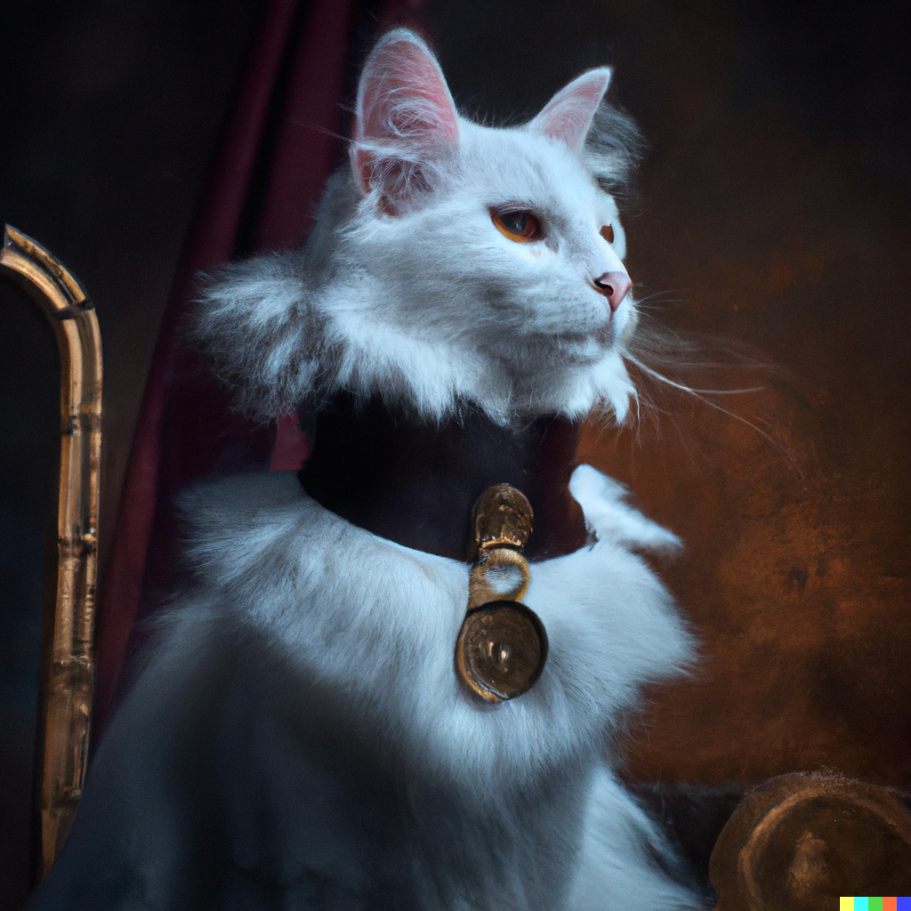
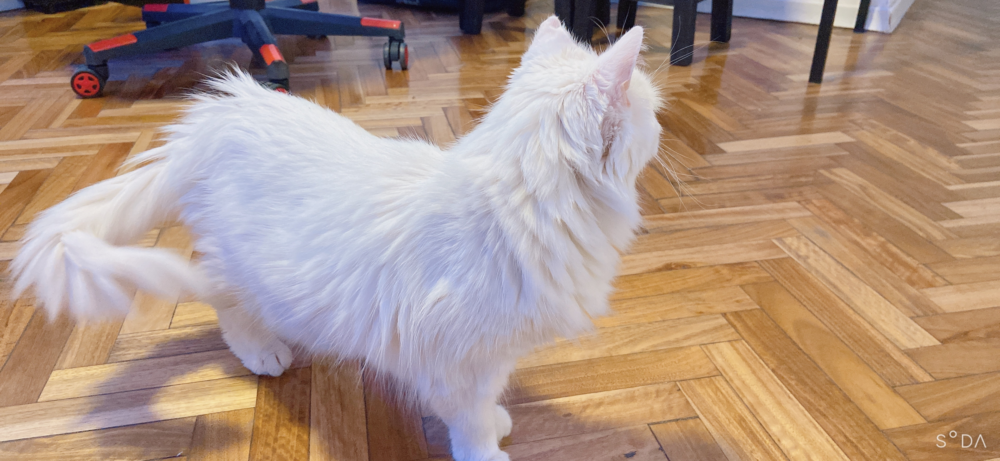

La vida de Tami

En las pintorescas calles de La Paz, Bolivia, nació una gata blanca llamada Tami. Desde su primer maullido, se podría sentir una energía especial que emanaba de ella. Tami no era una gata común; tenía sueños y ambiciones poco convencionales. Desde muy temprana edad, dejó claro que no se conformaría con la vida rutinaria de un felino doméstico.
Desde su tierna infancia, Tami desarrolló una pasión desenfrenada por la comida. Sus ojos se iluminaban ante la vista de un plato de comida, y no importaba si era croquetas de gato o un trozo de carne que había caído al suelo; ella estaba decidida a devorarlo. Aunque esta pasión por la comida la hacía un poco más rellenita que otros gatos, no le importaba en lo más mínimo. Tami sabía que debía estar bien alimentada para cumplir su sueño de convertirse en un superhéroe en Bolivia.
Uno de los rasgos más notables de Tami era su destreza para trepar. Desde temprana edad, se pasaba horas trepando las casas y los árboles. No había reto demasiado grande para ella. Sus habilidades en la escalada la ayudarían en su búsqueda de convertirse en un superhéroe, ya que sabía que a menudo tendría que alcanzar lugares elevados y difíciles de acceder para cumplir su deber.
Otra de las peculiaridades de Tami era su obsesión por perseguir autos. Aunque era un poco peligroso, ya que no comprendía los riesgos que esto implicaba, para ella era una actividad emocionante. Cuando veía un auto en movimiento, sus instintos cazadores se despertaban y corría tras él como si persiguiera a su presa. A menudo, esto preocupaba a sus dueños, quienes debían mantenerla a salvo.